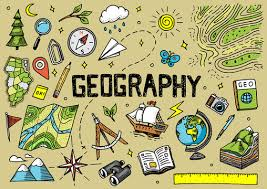
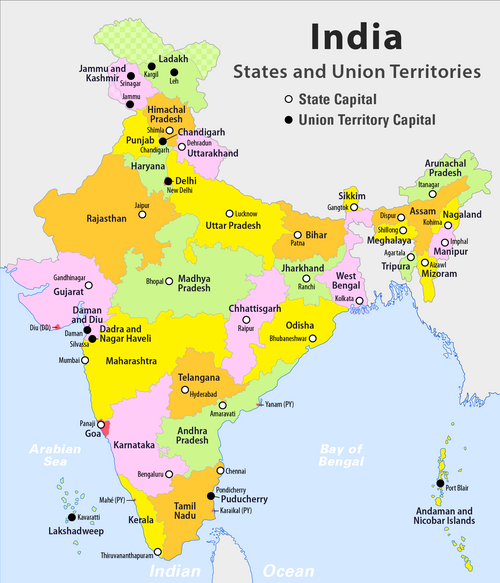

Geography is the study of Earth’s surface, climate systems, and human settlements.
Line break example
geography explains physical and human interactions.
Geography studies landforms and natural resources.
Climate change and weather patterns are important.
Map scales help measure distance.
H2O and altitude 23.
Flat Earth Spherical Earth.
Important facts.
| Student | Scores | ||
|---|---|---|---|
| Physical | Human | Environmental | |
| Rahul | 78 | 85 | 80 |
| Ananya | 88 | 90 | 92 |
Click on the map to get state map

Introduction If you come across any special trait of meanness or stupidity . . . you must be careful not to let it annoy or distress you, but to look upon it merely as an addition to your knowledge—a new fact to be considered in studying the character of humanity. Your attitude towards it will be that of the mineralogist who stumbles upon a very characteristic specimen of a mineral. —Arthur Schopenhauer Throughout the course of our lives, we inevitably have to deal with a variety of individuals who stir up trouble and make our lives difficult and unpleasant. Some of these individuals are leaders or bosses, some are colleagues, and some are friends. They can be aggressive or passive-aggressive, but they are generally masters at playing on our emotions. They often appear charming and refreshingly confident, brimming with ideas and enthusiasm, and we fall under their spell. Only when it is too late do we discover that their confidence is irrational and their ideas ill-conceived. Among colleagues, they can be those
Or they could be colleagues or hires who reveal, to our dismay, that they are completely out for themselves, using us as stepping-stones. What inevitably happens in these situations is that we are caught off guard, not expecting such behavior. Often these types will hit us with elaborate cover stories to justify their actions, or blame handy scapegoats. They know how to confuse us and draw us into a drama they control. We might protest or become angry, but in the end we feel rather helpless—the damage is done. Then another such type enters our life, and the same story repeats itself. We often notice a similar sensation of confusion and helplessness when it comes to ourselves and our own behavior. For instance, we suddenly say something that offends our boss or colleague or friend—we are not quite sure where it came from, but we are frustrated to find that some anger and tension from within has leaked out in a way that we regret.
What we can say about these two things—people’s ugly actions and our own occasionally surprising behavior—is that we usually have no clue as to what causes them. We might latch onto some simple explanations: “That person is evil, a sociopath” or “Something came over me; I wasn’t myself.” But such pat descriptions do not lead to any understanding or prevent the same patterns from recurring. The truth is that we humans live on the surface, reacting emotionally to what people say and do. We form opinions of others and ourselves that are rather simplified. We settle for the easiest and most convenient story to tell ourselves. What if, however, we could dive below the surface and see deep within, getting closer to the actual roots of what causes human behavior? What if we could understand why some people turn envious and try to sabotage our work, or why their misplaced confidence causes them to imagine themselves as godlike and infallible? What if we could truly fathom why people suddenly behave
If we really understood the roots of human behavior, it would be much harder for the more destructive types to continually get away with their actions. We would not be so easily charmed and misled. We would be able to anticipate their nasty and manipulative maneuvers and see through their cover stories. We would not allow ourselves to get dragged into their dramas, knowing in advance that our interest is what they depend on for their control. We would finally rob them of their power through our ability to look into the depths of their character. Similarly, with ourselves, what if we could look within and see the source of our more troubling emotions and why they drive our behavior, often against our own wishes? What if we could understand why we are so compelled to desire what other people have, or to identify so strongly with a group that we feel contempt for those who are on the outside? What if we could find out what